Mom proper.
Contents
ToDos
- put a few repeated scripts into functions, i.e. generator portfolio weight so that the published html looks more concise. (x)
- understand MOM with two random securities, and note down the exception.(x)
- study MOM as we increase the securities. understand the relationship between N, drift, and noise. (x)
- study two weighting schemes: equal weight, weighting according to score, and the effect of reducing N. (x)
- study ideal MOM with respect to equal weight short MOM & cap weight short MOM.(cap weight next post)
- study MOM with limited amount of long securities and cap weight benchmark short. This is most practical case. (next post)
- walk forward MOM, address the practical issues (next post)
As usual, my plan get out of control again!
MOM for 2.
load('data_equity_list_us.mat'); load('data_field_list.mat'); load('data_historical_data_us.mat'); i = 1; while i <= 4 % randomly pick data from the list. index = datasample(1:1300,2,'Replace',false); % load price, calculate mom, calculate portfolio weight and calculate % portfolio return are now in functions. px = fun_load_price(history_us, equity_list_us, index); mom_ts = fun_calculate_mom(px); portfolio_weight_ts = fun_portfolio_weight(mom_ts,'longshort'); portfolio_rt_ts = fun_portfolio_return(px, portfolio_weight_ts); % let's check out the result. fun_show_result(px,mom_ts,portfolio_weight_ts,portfolio_rt_ts); snapnow; i = i+1; end
 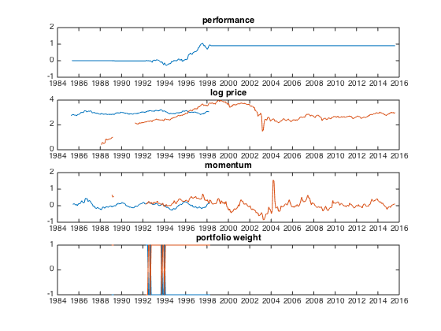 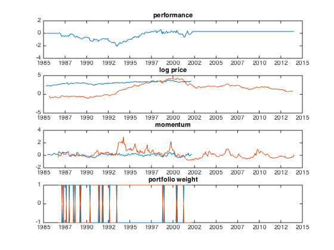
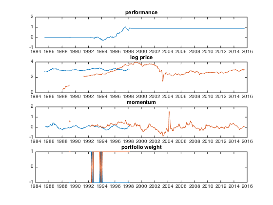 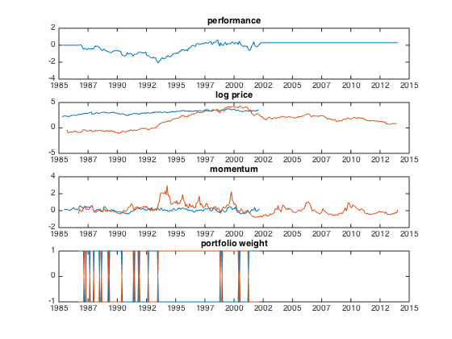 with only two securites, my momentum portfolio can run into ridiculous situation. For example, if one security drop to 0.1, I will be shorting a humongous amount of that security to be 'neutral'. But neutral with respect to what? The portfolio is capital neutral. In terms of risk, securities trading at very low price could have very little 'risk', if I define risk as permanent loss of capital.
I can check long only portfolio performance as well..
i = 1; while i <= 4 % randomly pick data from the list. index = datasample(1:1300,2,'Replace',false); % load price, calculate mom, calculate portfolio weight and calculate % portfolio return are now in functions. px = fun_load_price(history_us, equity_list_us, index); mom_ts = fun_calculate_mom(px); portfolio_weight_ts = fun_portfolio_weight(mom_ts,'longonly'); portfolio_rt_ts = fun_portfolio_return(px, portfolio_weight_ts); % let's check out the result. fun_show_result(px,mom_ts,portfolio_weight_ts,portfolio_rt_ts); snapnow; i = i+1; end
 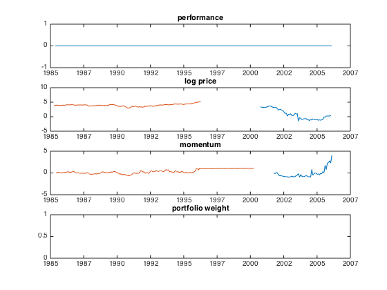
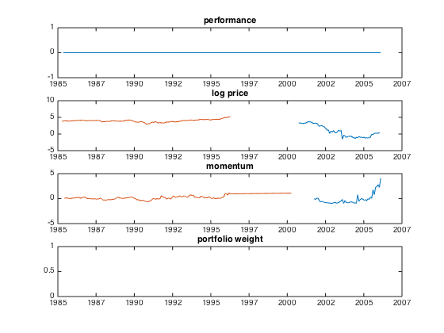 
Data Integrity
Before move from 2 to N, let's check data integrity again.
index = datasample(1:1300,1300,'Replace',false); px = fun_load_price(history_us, equity_list_us, index); px_mat = fts2mat(px); rt_geo = tick2ret(px,'Method','Continuous'); rt_simple = tick2ret(px,'Method','Simple'); rt_mat_geo = fts2mat(rt_geo); rt_mat_simple = fts2mat(rt_simple); figure plot(rt_mat_geo); snapnow; plot(rt_mat_simple); snapnow;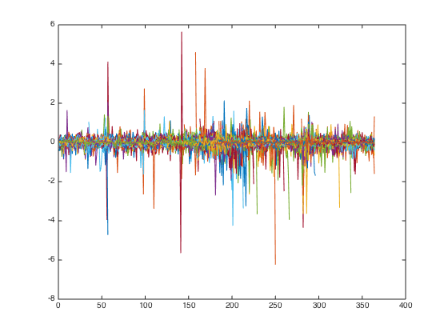
let's check out those extreme arithmetic returns.
i = find((max(rt_mat_simple)>4)); plot(log(px_mat(:,i))); snapnow; i = find((min(rt_mat_geo)<-3)); plot(log((px_mat(:,i)))); snapnow;
 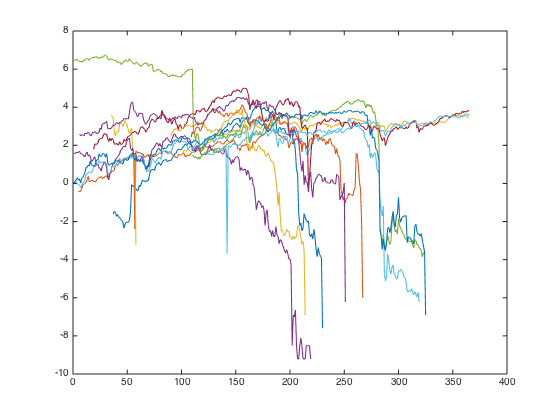
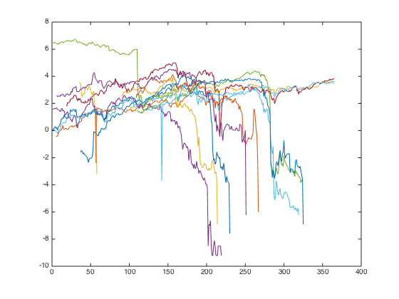 by add geometric return togather I get a picture of market volatility.
vol_ts = fints(rt_simple.dates, sqrt(12)*nanmean(abs(rt_mat_geo'))','MarketVolatility');
plot(vol_ts);
snapnow;
some price data bounces between two prices incessantly, let's see if we can identify them.
plot(abs(rt_mat_geo)) snapnow; plot(cumsum(abs(rt_mat_geo))) snapnow;

no I cannot. doesn't matter, let's keep moving.
let's write a function to clearup the data from its source.
px_clean = fun_clean_data(px); px_clean_mat = fts2mat(px_clean);
let's check the result.
i = find((max(abs(rt_mat_geo))>3)); semilogy((px_mat(:,i))); ylim([0.0001 1000]); snapnow; semilogy((px_clean_mat(:,i))); ylim([0.0001 1000]); snapnow;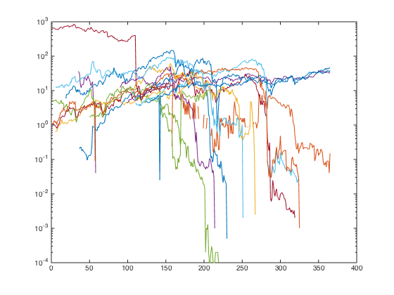 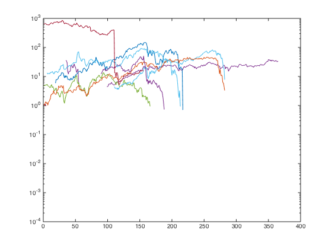
let's check the result with equal weight portfolio
portfolio_weight_ts = fun_portfolio_weight(px,'equalweight'); portfolio_rt_ts = fun_portfolio_return(px, portfolio_weight_ts); portfolio_rt_clean_ts = fun_portfolio_return(px_clean, portfolio_weight_ts); figure plot(cumsum(portfolio_rt_ts)); hold on; plot(cumsum(portfolio_rt_clean_ts)); legend('off'); snapnow;

this result is comparable with s&p.
load('data_benchmark.mat','storage') spx = fints(storage{1}{1}(:,1),storage{1}{1}(:,2),'SPX','d','S&P Monthly Data'); spx = tomonthly(spx); spx_rt = tick2ret(spx); plot(cumsum(spx_rt)); legend('off'); hold off; snapnow;
2->N
So MOM for 2 securities is trivial. What is going to happen as we increase N? let's exam.
i =1; while i<= 10 index = datasample(1:1300,2^i,'Replace',false); px = fun_load_price(history_us, equity_list_us, index); px = fun_clean_data(px); mom_ts = fun_calculate_mom(px); portfolio_weight_ts = fun_portfolio_weight(mom_ts,'longshort'); portfolio_rt_ts = fun_portfolio_return(px, portfolio_weight_ts); plot(cumsum(portfolio_rt_ts)); legend('off'); hold on snapnow; i=i+1; end hold off;

 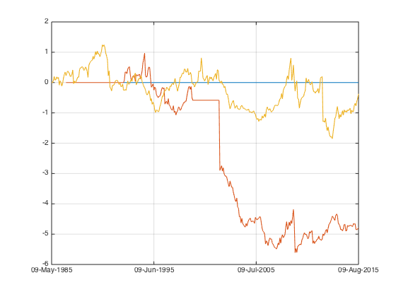
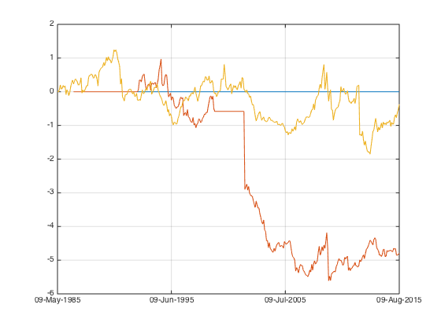 
 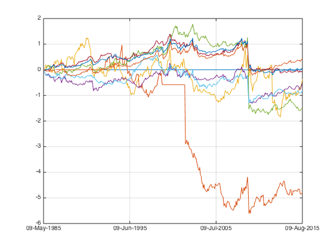
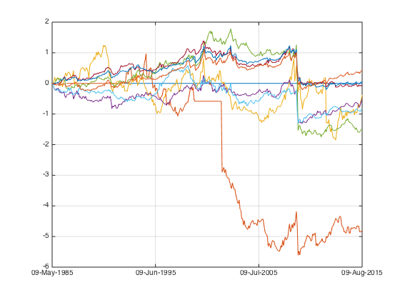 
one common feature is around 2008, all of them experienced a big drawdown.
Long only
Let's take a look at long only.
i =1; while i<= 10 index = datasample(1:1300,2^i,'Replace',false); px = fun_load_price(history_us, equity_list_us, index); px = fun_clean_data(px); mom_ts = fun_calculate_mom(px); portfolio_weight_ts = fun_portfolio_weight(mom_ts,'longonly'); portfolio_weight_eq_ts = fun_portfolio_weight(px,'equalweight'); portfolio_rt_ts = fun_portfolio_return(px, portfolio_weight_ts); portfolio_rt_eq_ts = fun_portfolio_return(px, portfolio_weight_eq_ts); plot(cumsum(portfolio_rt_ts)); legend('off'); hold on; plot(cumsum(portfolio_rt_eq_ts)); legend('off'); hold off; snapnow; disp(sprintf('with %d securities' ,2^i)); sharpe_eq(i) = sqrt(12)*sharpe(fts2mat(portfolio_rt_eq_ts),0); sharpe_mom(i) = sqrt(12)*sharpe(fts2mat(portfolio_rt_ts),0); [sqrt(12)*sharpe(fts2mat(portfolio_rt_ts),0) sqrt(12)*sharpe(fts2mat(portfolio_rt_eq_ts),0)] i=i+1; end plot(sharpe_eq); hold on; plot(sharpe_mom); hold off;

with 2 securities
ans =
0.2216 0.6511

with 4 securities
ans =
0.2350 0.5916
with 8 securities
ans =
0.2791 0.1012
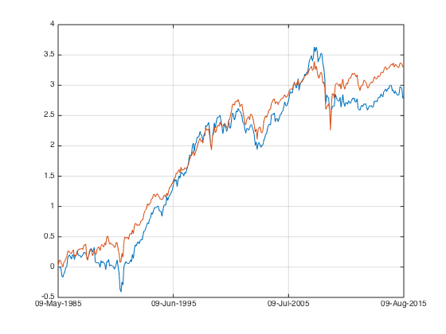 with 16 securities
ans =
0.5795 0.5908
with 32 securities
ans =
0.6200 0.5919
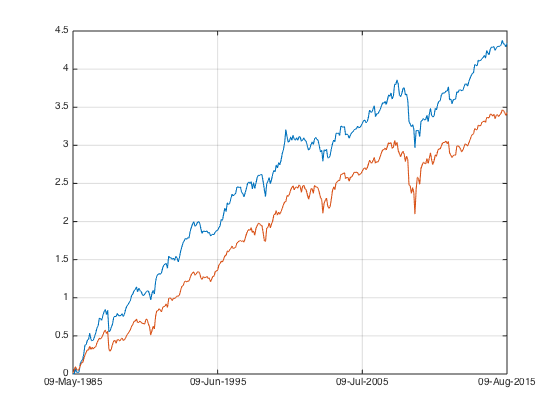 with 64 securities
ans =
0.6137 0.5429
with 128 securities
ans =
0.6351 0.5571
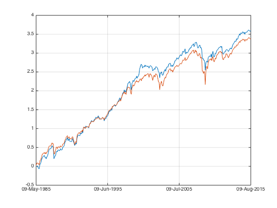 with 256 securities
ans =
0.7917 0.6369

with 512 securities
ans =
0.7483 0.6014

with 1024 securities
ans =
0.7801 0.6104
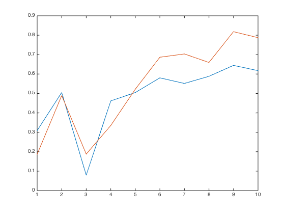 Short equal weight index
our naive longshort strategy is.. naive. let's see what happens if we change our short side to equal weight index instead. which is more close to what we can do in reality.
i =1; while i<= 10 index = datasample(1:1300,2^i,'Replace',false); px = fun_load_price(history_us, equity_list_us, index); px = fun_clean_data(px); mom_ts = fun_calculate_mom(px); portfolio_weight_ts = fun_portfolio_weight(mom_ts,'longshorteq'); portfolio_weight_eq_ts = fun_portfolio_weight(mom_ts,'equalweight'); portfolio_rt_ts = fun_portfolio_return(px, portfolio_weight_ts); portfolio_rt_eq_ts = fun_portfolio_return(px, portfolio_weight_eq_ts); plot(cumsum(portfolio_rt_ts)); legend('off'); hold on plot(cumsum(portfolio_rt_eq_ts)); legend('off'); hold off snapnow; disp(sprintf('with %d securities' ,2^i)); sharpe_longshorteq(i) = sqrt(12)*sharpe(fts2mat(portfolio_rt_ts),0); i=i+1; end hold off;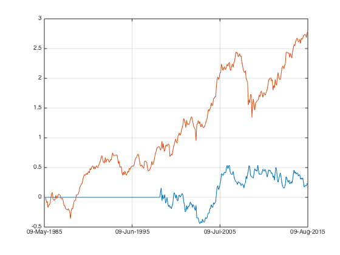
with 2 securities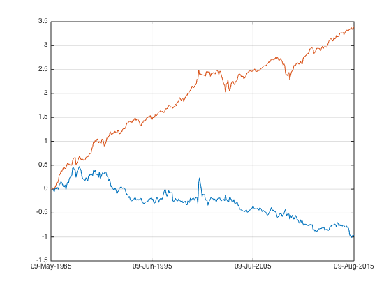
with 4 securities
with 8 securities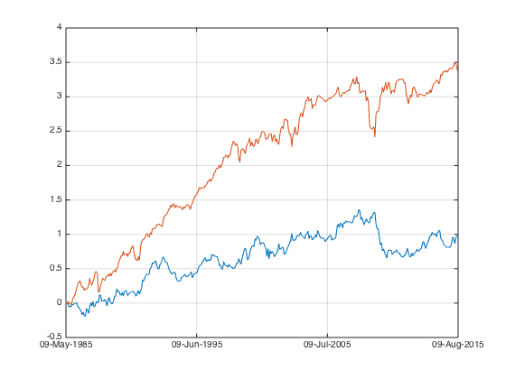
with 16 securities

with 32 securities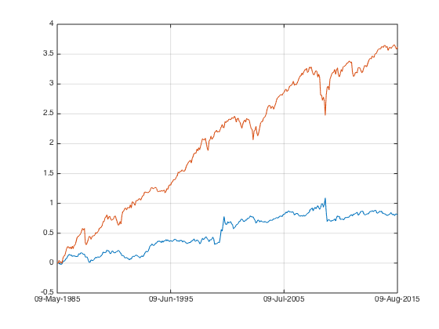
with 64 securities
with 128 securities

with 256 securities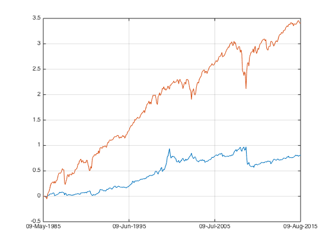
with 512 securities

with 1024 securities
we have some more sensible result here.
plot(sharpe_longshorteq);

compare sharpe ratio with/ without the momentum crash in 2008:
[sqrt(12)*sharpe(fts2mat(portfolio_rt_ts(1:(end-100))),0) sqrt(12)*sharpe(fts2mat(portfolio_rt_ts),0)]
ans =
0.5199 0.3027
correlation with market
corrcoef(portfolio_rt_ts,portfolio_rt_eq_ts)
ans =
1.0000 -0.3449
-0.3449 1.0000
correlation with market without momentum crash
corrcoef(portfolio_rt_ts(1:(end-100)),portfolio_rt_eq_ts(1:(end-100)))
ans =
1.0000 -0.0984
-0.0984 1.0000
Very little indeed.